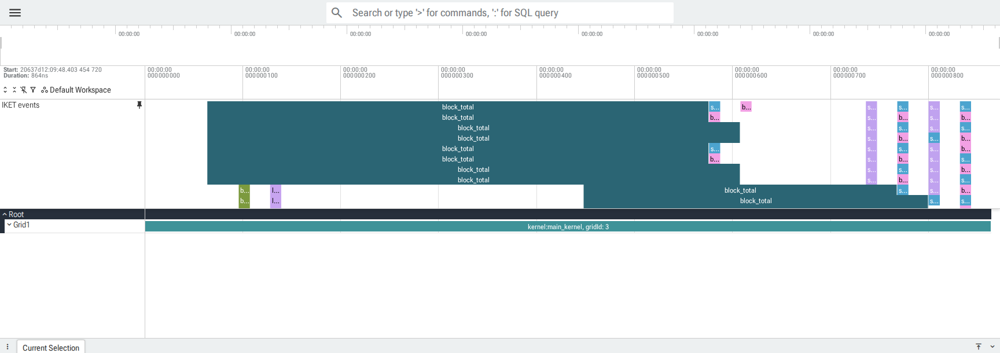

IKET Profiling¶
IKET is an experimental instrumentation tool for profiling TileLang CUDA kernels. It adds named markers, warp-local ranges, and optional scalar payloads to generated CUDA code. The external IKET profiler collects those events and exports traces that can be inspected with Perfetto.
IKET is a CUDA tool, not part of the TileLang language namespace:
import tilelang.language as T
from tilelang.tools.cuda import iket
The integration uses TileLang’s regular target="cuda" backend. It does not
depend on TileScale or the CuTe DSL frontend.
Requirements¶
The target environment must provide:
TileLang with CUDA support
A CUDA-capable GPU and driver
PyTorch, when running the included examples
The external IKET Python package and runtime
Verify the active Python environment with:
python -c "import tilelang, iket, torch"
The TileLang code-generation path supports both pre-Hopper and Hopper targets.
For SM90 and newer, generated instrumentation reads %cluster_ctarank. For
pre-Hopper targets, or when the target architecture cannot be determined, it
uses cluster rank 0 and does not emit the Hopper-only register.
Quick Start¶
Construct and compile the instrumented kernel inside iket.session(...):
import tilelang
import tilelang.language as T
from tilelang.tools.cuda import iket
def instrumented_add(n: int, threads: int = 128):
@T.prim_func
def main(
A: T.Tensor((n,), T.float32),
B: T.Tensor((n,), T.float32),
C: T.Tensor((n,), T.float32),
):
with T.Kernel(T.ceildiv(n, threads), threads=threads) as bx:
with iket.range("block_total"):
for tx in T.Parallel(threads):
i = bx * threads + tx
if i < n:
iket.mark("before_store")
C[i] = A[i] + B[i]
iket.mark("after_store")
return main
with iket.session(output_dir="/tmp/tilelang_iket"):
program = instrumented_add(1024)
kernel = tilelang.compile(
program,
out_idx=-1,
target="cuda",
execution_backend="cython",
)
The session must be active when tilelang.compile(...) generates CUDA source.
Kernel construction inside the session is recommended because it gives the
session a fresh event registry, but it is not required. Event metadata is
embedded in TIR, so a PrimFunc constructed before entering the session still
retains the information needed during compilation.
Running a program directly compiles and executes the instrumented kernel. To collect a trace, run the program through the external IKET profiler as described below.
Markers and Ranges¶
Use iket.mark(...) for an instant event:
iket.mark("load_inputs")
Use iket.range(...) as a Python context manager around a lexical region:
with iket.range("compute"):
# TileLang statements
...
The explicit range APIs are also available:
iket.range_push("compute")
# TileLang statements
iket.range_pop("compute")
iket.range_start(...) and iket.range_end(...) are aliases for
range_push(...) and range_pop(...). A range start can carry a payload, but
the range-end event cannot.
IKET records ranges at warp granularity. A block containing four warps can
therefore produce four trace ranges for one lexical iket.range(...) scope.
Names are limited to 32 UTF-8 bytes. Reusing the same marker or range name with
different payload dtypes in one frontend registry is rejected.
Runtime Payloads¶
Markers and range starts can capture one 32-bit scalar value. TileLang currently supports these payload dtypes:
int32uint32float32
Use an explicit payload descriptor for TileLang expressions:
iket.mark("store_index", payload=iket.payload(i, dtype="int32"))
iket.mark("scale", payload=iket.payload(value, dtype="float32"))
Simple Python scalars and expressions with a dtype attribute can be passed
directly, but an explicit dtype makes the trace schema unambiguous.
Runtime capture is opt-in:
with iket.session(runtime_payloads=True):
program = instrumented_add(1024)
kernel = tilelang.compile(program, target="cuda")
Without runtime_payloads=True, the payload schema remains encoded in the TIR
metadata token, but the emitted IKET metadata declares NoPayload and the
generated event writes no payload value. This keeps ordinary marker records at
four bytes. With runtime payloads enabled, the event emits separate 32-bit
timestamp and payload stores.
Payloads are observed through IKET’s warp-level dump mechanism. A payload value usually represents the lane selected by that mechanism, not every thread in the warp.
Compilation Sessions and Cache Behavior¶
The full session signature is:
with iket.session(
reset_events=True,
override=True,
disable_on_exit=True,
output_dir=None,
runtime_payloads=None,
disable_cache=True,
):
...
The parameters control the following state:
reset_eventsclears frontend event allocation for kernels constructed afterward. Metadata already embedded in aPrimFuncis unaffected.overridepermits IKET to replace an existingtilelang_callback_cuda_postproccallback while the outermost session is active.disable_on_exitrestores the previous callback by default. Leave this at its default for scoped use.output_dircreates the directory, setsTL_IKET_OUTPUT_DIR, and configures TileLang’s IKET path helpers for the duration of the session.runtime_payloadstemporarily selects whether payload values are emitted.Nonepreserves the previous setting.disable_cachebypasses TileLang’sKernelCacheby default and restores its previous state when the session exits.
Disabling the kernel cache is important even though event names and schemas are
part of the TIR cache identity. Callback activation and runtime payload mode are
host-side compilation state. Reusing a binary compiled without the callback,
or under a different payload mode, can therefore produce missing or stale
instrumentation. Set disable_cache=False only when the caller controls those
conditions.
The CUDA callback is reference-counted. Nested IKET sessions keep the outer callback active, and leaving the outermost session restores the callback that was registered before IKET. Output-directory, payload-mode, and cache state are also restored after the session.
The lower-level lifecycle helpers are available for advanced use:
iket.enable()
iket.is_enabled()
iket.disable()
iket.enable_runtime_payloads()
iket.runtime_payloads_enabled()
iket.disable_runtime_payloads()
Prefer iket.session(...) so cleanup also occurs when compilation raises an
exception.
Collecting a Trace¶
The external profiler is exposed through:
python -m iket.cli.main
For the comprehensive example, use:
rm -rf /tmp/tilelang_iket_all_features_profile
python -m iket.cli.main \
--output-dir /tmp/tilelang_iket_all_features_profile \
--clobber \
profile \
--postprocess all \
-- \
python examples/iket/all_features.py \
--iket-output-dir /tmp/tilelang_iket_all_features_profile \
--iket-runtime-payloads
The profiler configures the external IKET runtime and launches the command after
--. The output directory can contain:
iket_pid_0x....pftrace
iket_pid_0x....pftrace.gz
iket_pid_0x....trace.json
iket_pid_0x....html
TileLang can construct the same shell command from Python:
command = iket.profile_command(
["python", "examples/iket/all_features.py", "--iket-runtime-payloads"],
directory="/tmp/tilelang_iket_all_features_profile",
)
print(command)
profile_command(...) only returns a quoted command string. It does not launch
the profiler.
Viewing and Inspecting Traces¶
Serve the profiler output directory so the generated HTML can load its adjacent trace file:
cd /tmp/tilelang_iket_all_features_profile
python3 -m http.server 8080
Then open the exact generated file, for example:
http://localhost:8080/iket_pid_0x....html
On a remote host, forward the port with:
ssh -L 8080:localhost:8080 user@remote-host
If the generated page shows only the Perfetto landing page, import the matching
.pftrace file manually in the Perfetto UI.
The following image shows a trace produced by examples/iket/all_features.py:

IKET ranges, markers, and runtime payload events in Perfetto.¶
The JSON export can be inspected programmatically:
import json
from pathlib import Path
trace_path = max(
Path("/tmp/tilelang_iket_all_features_profile").glob("*.trace.json"),
key=lambda path: path.stat().st_size,
)
data = json.loads(trace_path.read_text())
launch = data["launches"][0]
names = data["stringTable"]
store_indices = [
marker["payloadVal"]
for marker in launch["markers"]
if names[marker["markerNameIdx"]] == "store_index"
and "payloadVal" in marker
]
print(store_indices[:8])
Output Helpers¶
The CUDA tool includes small host-side helpers:
iket.set_output_dir("/tmp/tilelang_iket")
iket.output_dir()
iket.output_path("kernel.cu")
iket.trace_files()
iket.profile_command([...], directory="/tmp/tilelang_iket")
trace_files(...) returns .trace.json files ordered from largest to smallest.
The helpers manage paths and command construction only; they do not collect a
trace themselves.
iket.event_table() returns the events registered while constructing recent
kernels. It is useful for inspection, but it is not the code-generation source
of truth. Call iket.reset() to reset frontend event allocation explicitly.
How Instrumentation Survives Compilation¶
Each frontend event call carries a canonical metadata token in TIR. The token contains the event name, kind, range identity, and payload schema. This has two important consequences:
A prebuilt
PrimFuncretains its event metadata across session entry and frontend registry resets.Structurally similar kernels with different event names have different IR cache identities.
While the session is active, tilelang_callback_cuda_postproc recovers those
tokens from generated CUDA, assigns module-wide event IDs, emits IKET metadata
arrays, and defines the NativeDump event macros. Event names are not recovered
from the process-local event_table() registry.
No-payload events write one 32-bit timestamp/event record. Payload events write
the timestamp and payload with two separate 32-bit shared-memory stores. The
payload store is volatile so ptxas does not combine the pair into STS.64, a
record shape that the current external IKET patcher does not accept.
Limitations¶
Only the TileLang CUDA backend is supported.
Runtime payloads are limited to
int32,uint32, andfloat32.Event and range names are limited to 32 UTF-8 bytes.
Source-code location tables are not generated. Trace
locIdxvalues are IKET runtime location indices, not Python or TIR line numbers.IKET records events at warp granularity.
The callback, payload mode, event registry, and kernel-cache switch are process-global. Concurrent compilation workflows must coordinate access.
The integration depends on private metadata and NativeDump conventions of the external IKET runtime and should be treated as experimental.
Troubleshooting¶
Payload schemas appear without payloadVal¶
Compile the kernel under a session with runtime payloads enabled:
with iket.session(runtime_payloads=True):
kernel = tilelang.compile(program, target="cuda")
Also verify that the marker has a supported payload descriptor.
The profiler fails while patching a payload kernel¶
Payload instrumentation requires two separate 32-bit stores. Inspect the generated binary with:
nvdisasm kernel.cubin | grep -E "STS|PMTRIG"
The expected shape is:
STS [addr], timestamp_with_event_id
STS [addr+0x4], payload_value
PMTRIG event_id
An STS.64 for the timestamp/payload pair indicates that the instrumentation
sequence no longer matches IKET’s NativeDump patching convention.